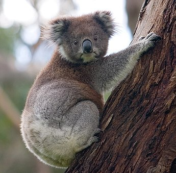

Koala (Phascolarctos cinereus)is an herbivore marsupials that live in the eucalyptus forests of eastern Australia. They are the only living species in the family Phascolarctidae. They are related to the wombats. Koalas are often called koala bears, because a koala looks like a small bear or teddy bear.
However, it is not a bear, it is quite a different type of animal. Koalas have brownish-grey or silver-grey fur, and a big pink, dark red or/and black nose. They have sharp claws which help them to climb. Koalas also have finger prints which look the same as human finger prints. Finger print experts have had difficulty in being able to tell if the prints are from a human or koala. Finger prints are rare among mammals that climb trees. Scientists do not know why the koala has them, but their best guess is that it helps the koala choose leaves to eat.
for more info 